第一期：能力与边界
先回答“2.1 到底能不能用”，再讲最常见的文字、肢体和参考图问题。
01—07
带很多字的海报，应该走哪条路线？
已实测专家结构化提示词最稳，Skill+API 更省事，PE 审美最强但会主动扩写。密集文字不是必然失败，但标题、时间、footer 和图标二维码必须分开验收。
- 菜单 8 条、14 条精确字符串都能逐字正确。
- 真实场景海报中，PE 会主动加图标、二维码或拆标题。
- 版式条件比“不要改变字距”的禁令更有效。
商品包装小字总崩，是模型不行吗？
边界已确认先看源图，再决定走 VOSR、Qwen 重建还是文字层。模糊但字形仍在，用 VOSR；已经是错字或不可辨，用准确文字库存让 Qwen 整图重建；必须 100% 正确，就交给文字层插件。
- 模糊标签中的“净含量”可由 VOSR 恢复到可读。
- 降质源图无文字库存时，小字 3/3 崩坏；加库存后 3/3 救回。
- 营养成分表这类多栏小字仍是明确高风险场景。
手脚崩了怎么修？一定要画 Mask 吗？
需要人工验收不一定需要 Mask，逐轮缩小范围的整图编辑也能修。但极端姿势和手部特写不能盲信，必须放大到指甲级逐根检查。
- 双人击掌、盘腿等常规动作可通过。
- 微距捏钥匙案例回放确认有 6 根手指。
- 极端姿势容易被模型改写成更常见的动作。
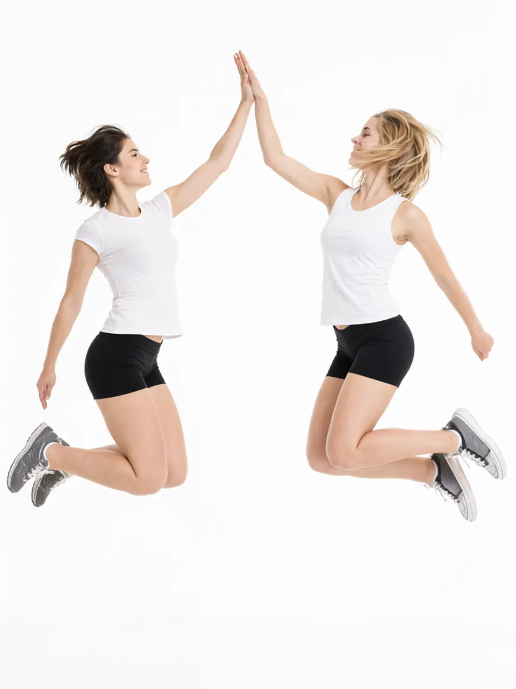
人物参考图能不能切换到侧面、背面？
提示词有效可以，但不能只写“换个角度”。要明确方位角、身体朝向、可见部位、镜头景别和新的构图关系。
- 正面到 90° 侧面、135° 后三分之二均有成功案例。
- 必须声明“新构图”，否则模型容易继续沿用参考图正面角度。
- 身份一致性仍需多 seed 筛选。
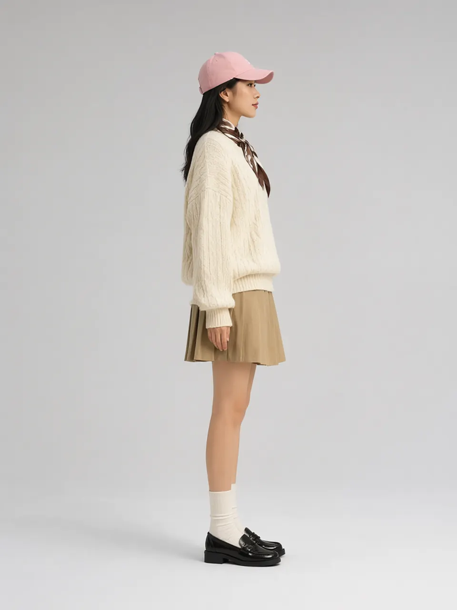
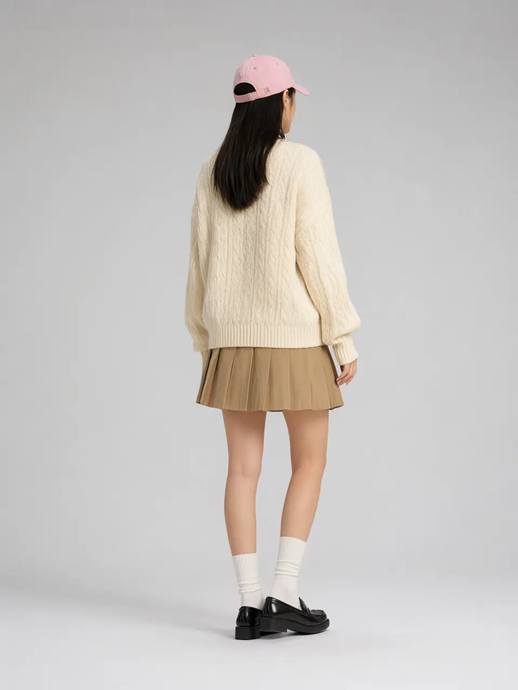
多张参考图能不能各司其职？
组合有边界可以，但参考图必须明确分工。人物身份、骨架、服装、产品和背景不要混在同一张图里；人物姿态优先使用骨架图或 Pose 控制。
- 六张参考图一次合成成功：身份、骨架、服装、包、背景、风格分别落地。
- 含真人参考图时，身份串扰仍可能发生。
- 骨架 + 平铺服装通常比“直接拿人物照片当姿势图”更稳定。
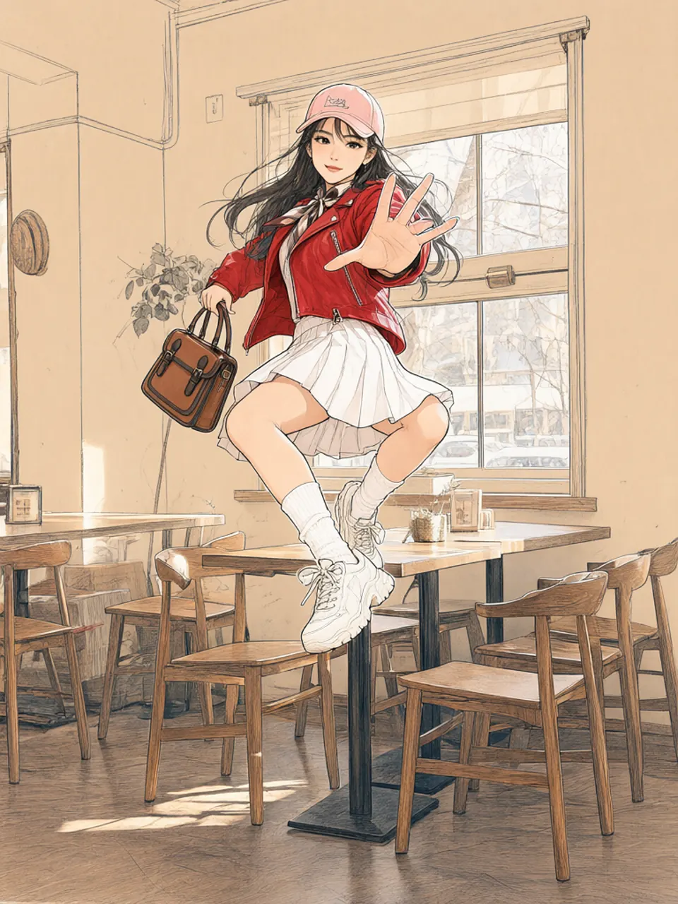
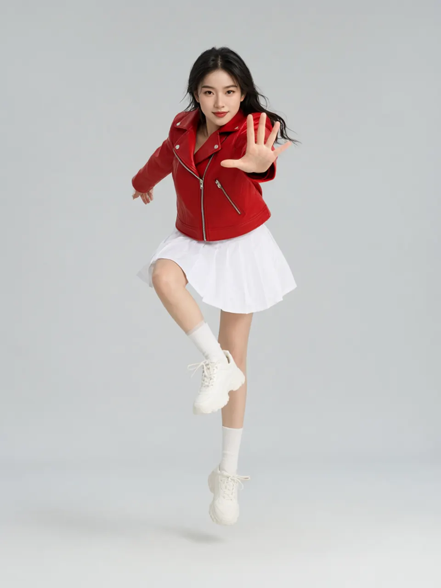
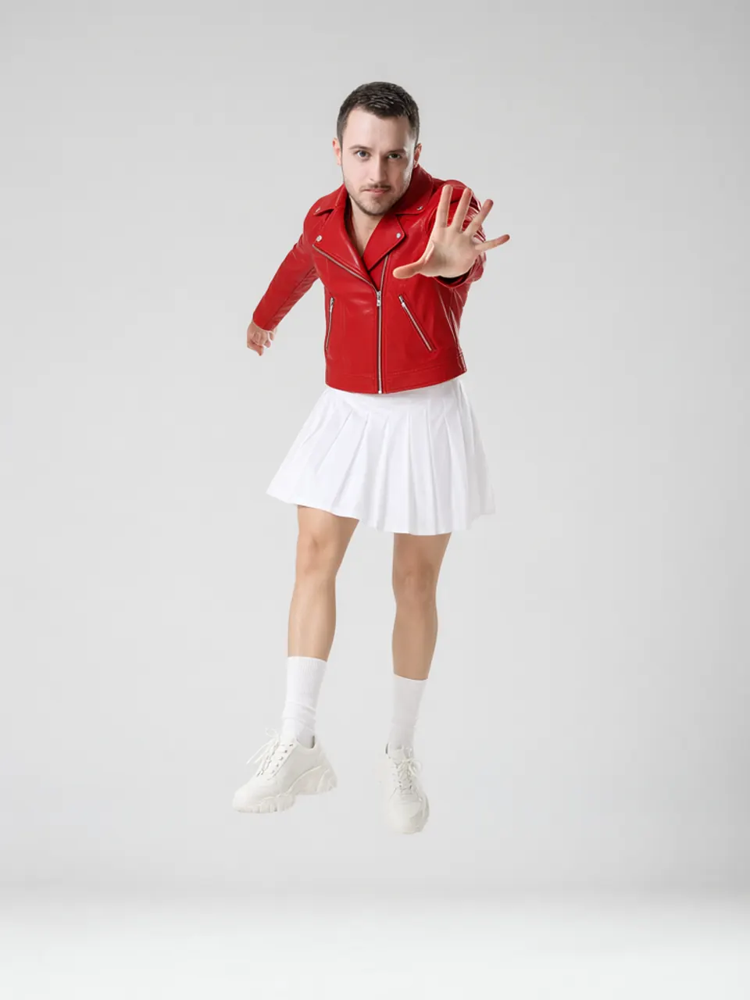
局部编辑、圈选、涂抹、Mask 有什么区别？
官方路线三者本质都是告诉模型“哪里可以改”，区别在于标记是否永久画进图里。临时圈选和涂抹适合快速试验，独立 Mask 最适合可重复生产。
- 原图 + Mask + 自然语言指令，可以把编辑范围从全图缩到局部。
- 局部修小字仍不可靠，Mask 不能自动解决文字识别问题。
- Mask 应与目标画布对齐，编辑内容越明确越稳定。
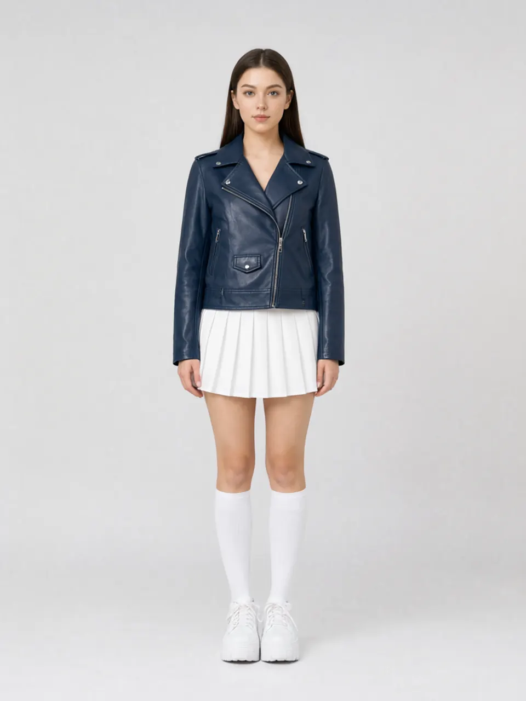
能不能直接生成透明底和抠图素材？
已实测可以，透明图和主体抠图是 2.1 比较适合的生产场景。但交付前仍要检查发丝、遮挡、半透明边缘和动态模糊。
- 真人全身、发丝近景、复杂遮挡、三人合影、动态模糊均完成过实测。
- 透明输出要检查真实 alpha，不要只看黑色预览背景。
- 产品资产再编辑前，最好保留透明原图和白底检查图。
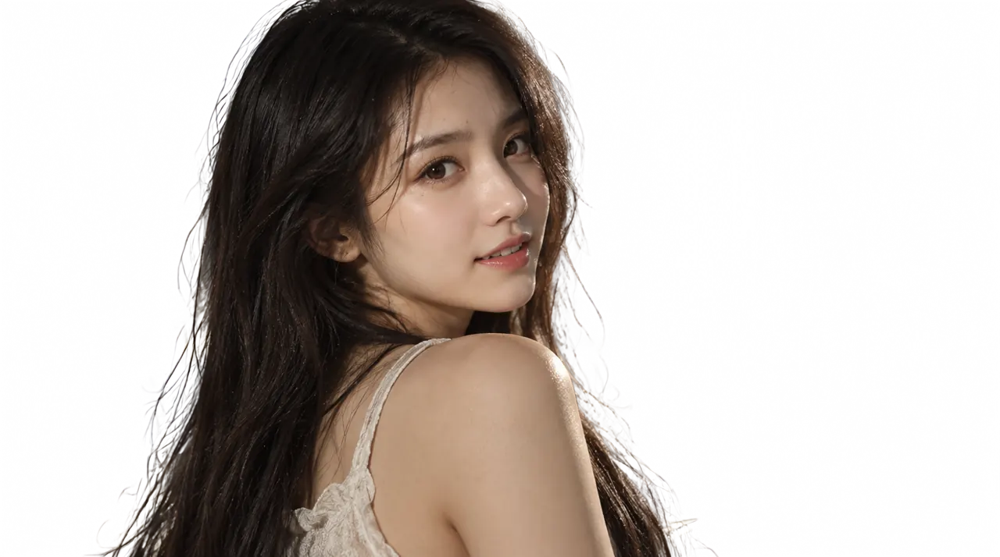
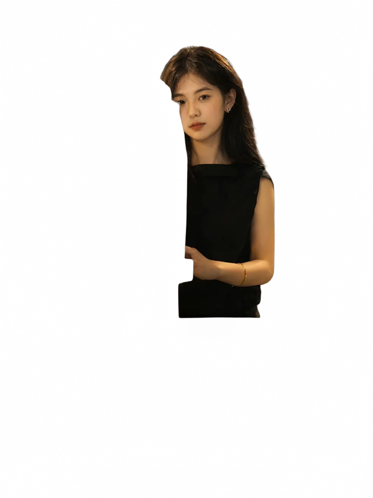
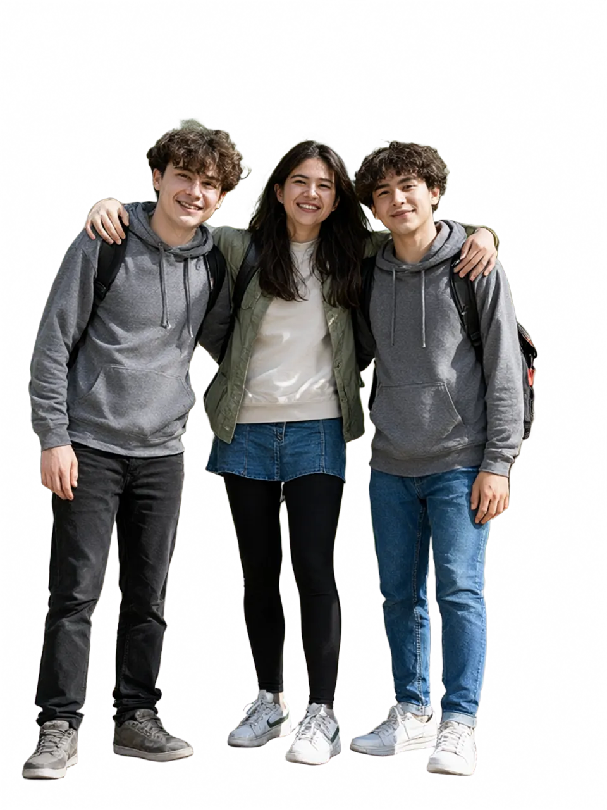
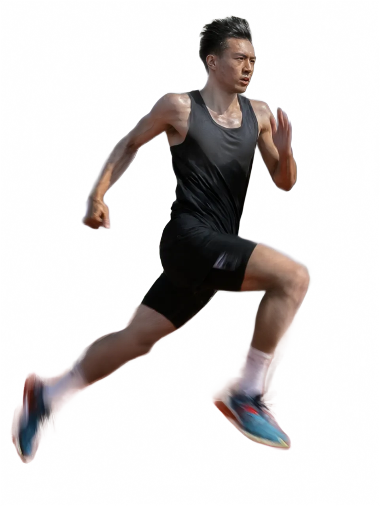
第二期：工具与生产路线
从单项能力转到实际工作流：修复、提示词、加速、插件和 ControlNet 怎么分工。
08—14
高清放大和模糊修复应该用什么？
路线已分流纯修复默认 VOSR 2.0；边修边改才用 Qwen Image 2.1。不要为了放大一张图，让 Qwen 重新重绘整张画面。
- VOSR 更快、更保真、显存更低，适合不改内容的纯修复。
- Qwen 适合换背景、换色、修手等“放大同时改变内容”的任务。
- Detail Enhancer LoRA 不是必装，必须按真人、插画分别判断。
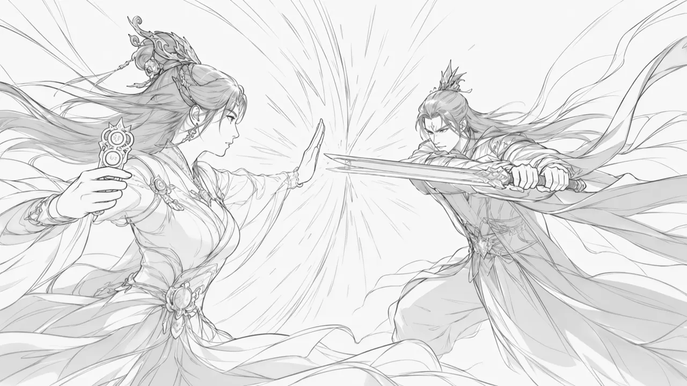
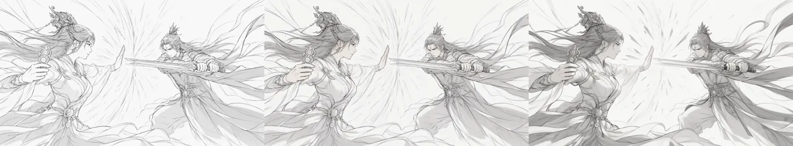
Skill、官方 PE、手写提示词，日常到底用哪个？
按任务选择日常优先 Skill；复杂策划可以用 PE；确定性任务用结构化手写提示词。PE 不是质量开关，它会增加思考和扩写，尤其要防止海报中自动新增文字。
加速 LoRA 到底能不能用？
重要结论更正先纠正一个关键结论
Edit-2511 Lightning LoRA 不能直接接到 Qwen Image 2.1。2.1 基座对应维度为 4096，2511 LoRA 与 Edit-2511 基座对应维度为 3072。日志出现 reshape error 后，ComfyUI 仍会继续出图，但 LoRA 实际没有成功注入。
当前不要把旧的 2511 工作流当作 2.1 加速工作流分享。2.1 的低步数方案必须重新使用结构匹配的 2.1 加速权重做 A/B；2511 LoRA 应放回 Edit-2511 基座单独验证。
- 之前的 5.672 秒、6.641 秒不能证明 2511 LoRA 生效。
- 旧成图保留为历史记录，但应标为“LoRA 注入失败后的基座输出”。
- 以后先查维度，再看日志，再做同 seed 无 LoRA/有 LoRA 对照。
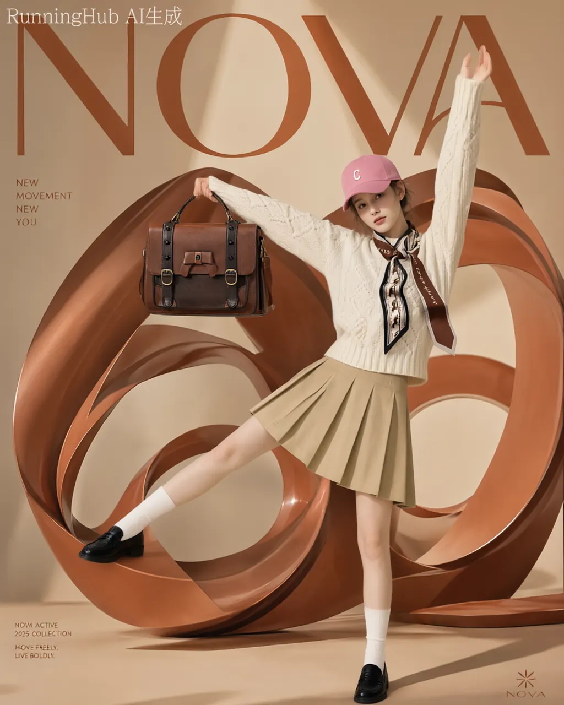
文字插件为什么还要再接一次 2.1 编辑？
两段式方案插件负责把字写对，2.1 负责把纯色覆盖区域融回背景。这是“确定性文字层 + 语义融合”的组合，不是让模型重新猜一遍文字。
- 插件单独写字准确，但可能留下纯色矩形。
- 2.1 原生二次编辑可以消除色块并恢复纹理。
- 旧的 02B 不能拿来证明 2511 加速；有效融合证据来自原生 2.1 路线。
Fun-ControlNet Union 和 T8 节点到底解决什么？
结构控制提示词负责“说什么”，ControlNet 负责“结构长什么样”。Pose 锁骨架，Depth 锁空间层次，Canny/Lineart 锁轮廓，Scribble 适合草图构想。
- 人物资产图优先 Pose；产品轮廓优先 Canny/Lineart；空间关系可试 Depth。
- 控制图尺寸、比例和目标画布必须保持一致或严格对齐。
- T8 是社区适配路线，使用前要区分节点兼容性和模型能力。

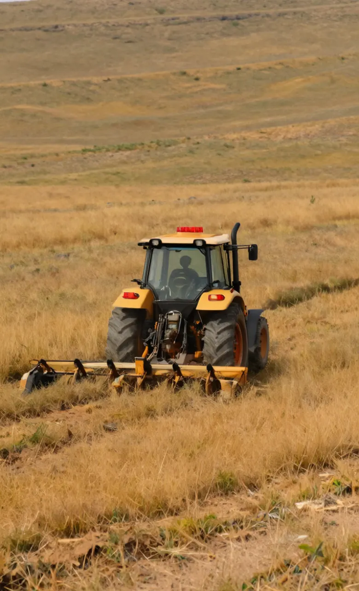
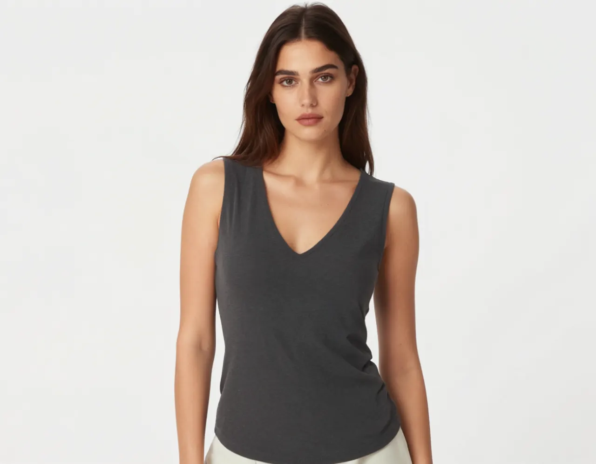
参考图编辑不好，究竟是提示词问题还是模型问题？
对照已完成两者都有，但原工作流中的泛化提示词是主要问题之一。把参考图职责、Pose 职责、服装职责和必须执行的动作写清楚，姿态跟随会明显改善；但背景漂移和脚部问题仍可能存在。
- 泛化提示词容易保留服装，却不执行抬手、屈膝等动作。
- 明确职责提示词能提高 Pose 跟随度。
- 提示词优化不能替代脚部修复、背景保持和局部编辑。
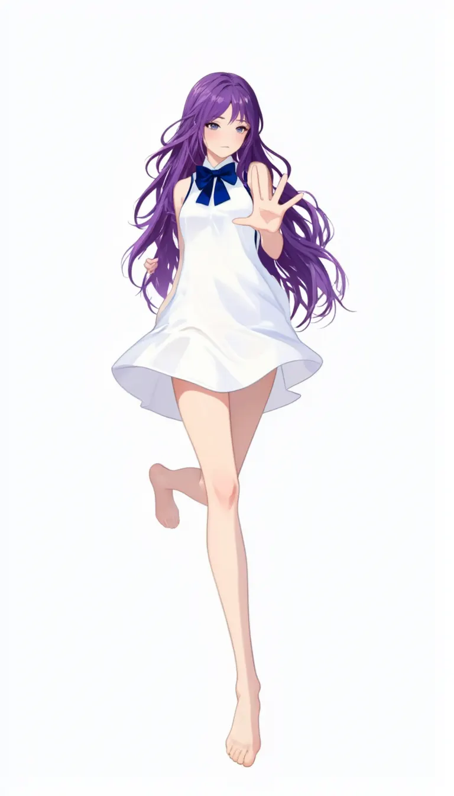
Qwen Image 2.1 最终应该怎么进入实际生产？
最终路线不要让一个模型承担所有确定性工作。2.1 负责生成和语义编辑，Skill/PE 负责提示词辅助，文字层负责精确文字，VOSR 负责纯修复，ControlNet 负责结构约束，最后人工验收。